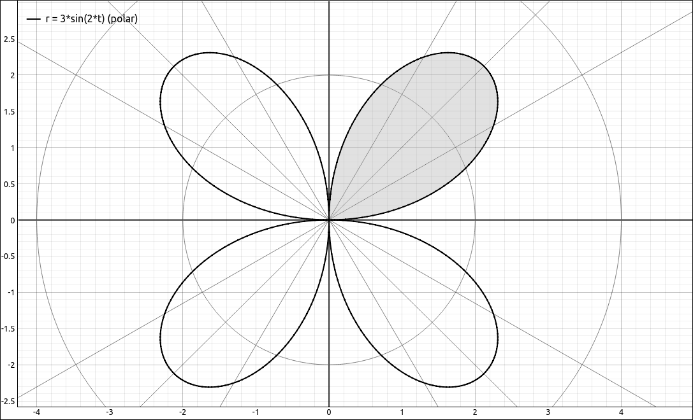

Area and Arc Length in Polar Coordinates#
Discussion & Definitions#
We will not go through the derivations of either of these formulas, your textbook should have the derivations.
Theorem: Area of a Region Bounded by a Polar Curve
Suppose \(f\) is continuous and nonnegative on the interval \(\alpha \leq \theta \leq \beta\) with \(0 < \beta - \alpha \leq 2 \pi.\) The area of the region bounded by the graph of \(r = f(\theta)\) between the radial lines \(\theta = \alpha\) and \(\theta = \beta\) is
Theorem: Arc Length of a Curve Defined by a Polar Function
Let \(f\) be a function whose derivative is continuous on the interval \(\alpha \leq \theta \leq \beta.\) The length of the graph of \(r = f(\theta)\) between \(\theta = \alpha\) and \(\theta = \beta\) is
Example: Area#
In this example we will find the area of one petal of the rose defined by the equation \(r = 3 \sin(2\theta).\)

\(r = 3 \sin(2\theta)\) with one petal shaded.#
The bounds of \(\theta\) for one petal would be the consecutive places where we hit the origin, that is, \(r = 0.\) We can see that this is the interval \([0, \pi/2]\) with the help of a CAS but we can use the solver to verify this. So the integral we want to find is,
GeoGebra#
Input,
3 sin(2x)
Assume this is f. Form the integrand,
1/2 f^2
Assume this is g. Integrate,
Integral(g,0,pi/2)
the result is, 3.53429.
CLAE#
Input,
3*sin(2*x)
Assume this is R1. Form the integrand,
1/2*R1^2
Assume this is R2. Integrate with Calculus > Definite Integral, bounds 0 and pi/2, the result is, \(\frac{9 \pi}{8}.\)
Example: Arc Length#
In this example we will find the arc length in one petal of the rose defined by the equation \(r = 3 \sin(2\theta).\)
GeoGebra#
Input,
3 sin(2x)
Assume this is f. Form the integrand,
sqrt(f^2+(f')^(2))
Assume this is g. Integrate,
Integral(g,0,pi/2)
the result is, 7.26634.
CLAE#
Input,
3*sin(2*x)
Assume this is R1. Take the derivative of R1 with Calculus > Derivative, assume the result is in R2. Form the integrand,
sqrt(R1^2+R2^2)
the result is,
Integrate with Calculus > Definite Integral, bounds 0 and pi/2, the result is,
This is another difficult integral, as most arc length integrals are. Select Algebra > Approximate and we get the result, 7.2663361654107571488.